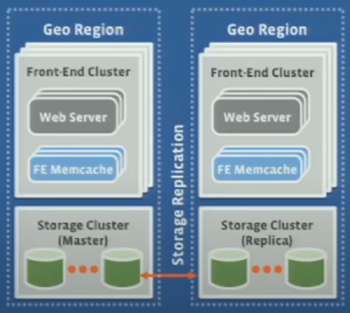
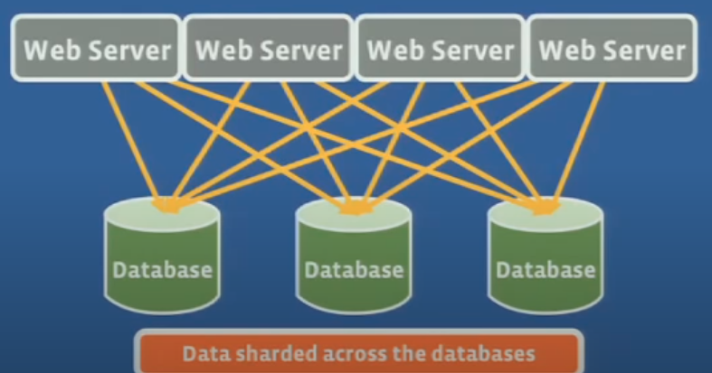
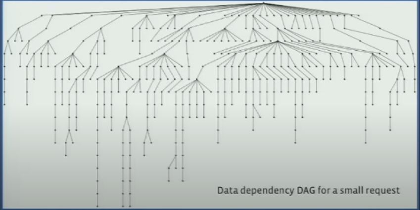
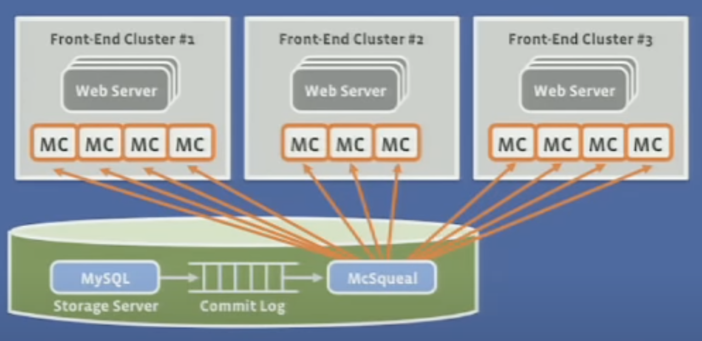

Book - System Design Interview - Alex Xu
Contents
Book - System Design Interview - Alex Xu#
Scale from zero to millions#
Concepts#
Single Server Startup
request flow
DNS
Web servers
GET/POST request
Type of sources
Mobile/Web application
Database
NoSQL/RDBMS
Vertical/Horizontal Scaling
Load Balancer
Private IP
What is the job of load balancer
What happens when one server goes down
Server pool
System availability
Database Replication
Master/Slave Relationship
Advantages
Better performance
Reliability
High System availability
Cache
read-through cache
when to use cache
read frequently
modified infrequently
expiration policy
consistency
datastore and cache in sync
single point of failure(SPOF)
multiple cache
eviction policy
LRU
LFU
FIFO
CDN
network of geographically dispersed servers
static content
dynamic content caching
header TTL
cost - as it comes from 3rd party
cache expiry
Stateless web tier
Stateful architecture
Shared data store
NoSQL
RDBMS
Cache
Autoscaling
adding/removing web servers based on traffic load
DataCenters
geo-DNS routed
Multi-data center setup
traffic redirection
data synchronization
test and deployment
Message Queue
Asynchronous communication
decoupled architecture
producer/consumer
Logging, Metrics, Automation
Database scaling
Vertical
Horizontal
Sharded databases
Resharding
Consistent hashing
Celebrity problem
Join/De-normalization
References#
Hypertext Transfer Protocol#
Application Layer
HTTP
SMTP
FTP
Transport Layer
TCP
UDP - low latency
Interaction between Application layer and Transport layer
happen using Port
so it knows where is the data coming from
HTTP uses port 80
Packets
Transport Layer breaks it into packets
each individual packet takes independent route to reach its destination
Headers
TCP adds header into the packets
helps to reassemble packets
did packet arrive without any mishap
Internet Layer
packets are put in internet layer (IP)
attaches origin and destination IP addresses
Network Layer
knows the MAC addressing
so that packet goes to the right physical machine
Not using same route
avoids data congestion
reaches earlier compared if all packets went the same route
OSI(Open System Interconnection) model of computer networking
Application Layer (7)
Presentation Layer (6)
Session Layer (5)
Transport Layer (4)
Network Layer (3)
Data Link Layer (2)
Physical Layer (1)
HTTP version
HTTP Anatomy
Client/Server architecture
request/response
HTTP request
URL
Method type
GET/POST/PUT/DELETE - different semantics
GET - reading
POST - write
Headers
what kind of content
cookies
which host/location
Body
GET does not has body - send with URL
POST will have a body - upload image
HTTP response
Status Code
whether it succeeded/warning/error
Headers
Body
content that was requested
How HTTP works
HTTP 1.0 over TCP
TODO
HTTP 1.1 over TCP
TODO
HTTP 2.0 over TCP
TODO
HTTP 2.0 over QUIC (HTTP 3.0)
TODO
UDP version
google is experimenting on
Should I go beyond relational databases#
2009 article
Replication#
strategy
active/passive
synchronous/asynchronous
multi-master/primary
distributed concurrency control
Multi-master replication#
advantages
availability
distributed access
disadvantages
consistency
violates ACID properties
performance
integrity
conflict resolution becomes difficult
NDB Cluster Replication: Multimaster and Circular Replication#
AllSourcesAreReplicas |
NotAllSourcesAreReplicas |
|
|---|---|---|
|
|


Data replicates from Cluster 1 to 3 through 2 different routes
directly
through cluster 2

Caching Strategies and How to Choose the right one#
data access patterns
is system write heavy/read less frequently (eg time based logs)
is data written once and read multiple times (user profile)
is data returned always unique (search query)
Cache Strategy
Cache-Aside
application directly talks to both the cache and the database
cache hit
cache miss
used mostly for read heavy workloads
Memcached/Redis
Read-Through Cache
cache sits in-line with the database
missing data is read from database, populated in the cache and returned
Write-Through Cache
data is first written to cache, then to database
cache sits in-line with the database
DynamoDB Accelerator (DAX)
both read-through and write-through cache
Write-Around
data is written directly to the database
only the data that is read goes to the cache
Write-Back
used primarily for write-heavy workloads
write to cache immediately, after delay is written back into database
Scaling Memcache at Facebook#
2013 research paper
Youtube - Scaling Memcache at Facebook - Rajesh Nishtala
infrastructure requirements for Facebook
near real time communication
aggregate content on the fly from multiple sources
be able to access and update very popular shared content
scale to process millions of user requests per second
design requirements
support a very heavy read load
geographically distributed
support constantly evolving product
persistence handled outside the system
memcached
basic building block for distributed key-value store for Facebook
network attached in-memory hash table
supports LRU based eviction
Roadmap
Single front end cluster
read heavy workload
wide fanout
handling failures
Multiple front-end clusters
controlling data replication
data consistency
multiple regions
data consistency

Scaling memcache in 4 steps
No memcache server
A few memcache server
10s of server and millions of operations per second
Many memcache server in one cluster
Many memcache server in multiple cluster
Geographically distributed servers
Pre-memcache#
data was sharded across databases

Why separate cache?
high fanout and multiple rounds of data fetching

A few memcache server#
2 orders of magnitude more reads than writes
Solution: Deploy a few memcache hosts to handle the read capacity
how to store data
Demand-filled look-aside cache
look for key in memcache
if it exists, return the value
if it does not exist
db lookup
refill the cache
Handling updates
update the db
invalidate the cache by deleting(why delete)
idempotent - delete is a delete
works with demand filled model pretty well
Problems with look-aside caching
stale sets
Webserver A reads value A from DB
Webserver B updates value B into DB
Webserver B sets memcache with value B
Webserver A sets memcache with value A
Memcache and DB are inconsistent till a delete event is triggered. This is not a transient inconsistency, its a permanent inconsistency
Solution:
extend memcache protocol with leases
thundering herds
accessing popular celebrity content
any update deletes the memcache content
all webserver then access db at the same time
Solution
cache holds-off request till it gets refilled
Many memcache servers in one cluster#
need even more read capacity
100s of server and 10s of millions of request
items are distributed across memcache servers by using consistent hashing on the key
all web servers talk to all memcache servers
this puts lot of load on memcache
Problems
Incast congestion
wide parallel fetch to many servers
memcache returns the value
when all values come back at webserver, they share networking resources at the client side not the server side
this results in packet drops
Solution
sliding-window protocol that limits the number of outstanding messages
larger windows cause more congestion
smaller windows results in more round tripis to the network
there is a sweet spot
Many memcache servers in multiple clusters#
thousands of servers and hundreds of millions of operations per second
all-to-all limits horizontal scalability
all-to-all worsens as increase
so second cluster (a collection of web servers and memcache) needs to be added in
challenge
multiple copies of cluster cache needs to be consistent
manage over-replication of data
interesting - read paper
Problems
Manage multiple copies of cache consistent
Solution
db storage is MySQL
on top of MySQL, there is a system called McSqueal
this looks at all the database transactions that have been committed
reads them out of the commit log
extract the memcache items that needs to be invalidated
then this system broadcasts invalidations to all the front-end clusters
this invalidates after the database operation commits
otherwise risk of stale data is possible
this guarantees that upon cache invalidation, a cache miss will result in fresh right value
Invalidation pipeline
too many packets
Solution
there are databases where MySQL is running
on top of them McSqueal is running
these database instances are then routed using Memcache Routers(MacRouter)
these MacRouter then fan the deletes out into different front-end clusters with each cluster having their own MacRouter running
these then broadcastt the delete
advantage of this is
inter-cluster bandwidth is much smaller than intra-cluster bandwidth
this minimizes the amount of bandwidth used and maximizes packet density
this improves packet density by 18x
each layer can buffer its deletes in case of failure of downstream component

Geographically distributed clusters#
Single point of Failure#
Wiki
Amazon CloudFront Dynamic Content Delivery#
Configure Sticky Sessions for Your Classic Load Balancer#
Active-Active for Multi-Regional Resiliency#
Amazon EC2 High Memory Instances#
What it takes to run Stack Overflow#
What the Heck are you actually using NoSQL for#
http://highscalability.com/blog/2010/12/6/what-the-heck-are-you-actually-using-nosql-for.html
What problems are you using NoSQL to solve? Which product are you using? How is it helping you?
Facts statistics (23rd Jul 2022)#
Faceboook
YouTube
WhatsApp
Instagram
Facebook Messenger
How many messages does Facebook messenger manage every day?
100B
Number of active users worldwide?
1.3B
How many groups are started every day?
2.5M
Number of bots operating on messenger?
300K
Over 500,000 Facebook users are added to Facebook Messenger on a daily basis
Over 150 million video calls are made on Messenger every day
Around 56% of US Messenger users are men
SnapChat
TikTok